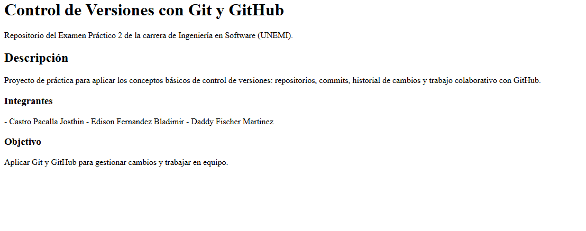
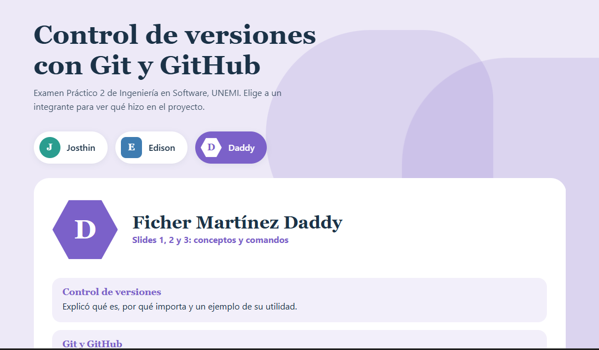

Control de versiones con Git y GitHub
Examen Práctico 2 de Ingeniería en Software, UNEMI. Elige a un integrante para ver qué hizo en el proyecto.
Cómo trabajamos
- CrearEl repositorio público y su README.md.
- ClonarCada integrante lleva el proyecto a su computadora.
- CommitCambios pequeños con mensajes que explican qué se hizo.
- Publicargit push para compartir el trabajo en GitHub.
Evidencias del equipo: del inicio al final
La primera versión de la página y cómo quedó después de los cambios de cada integrante.

